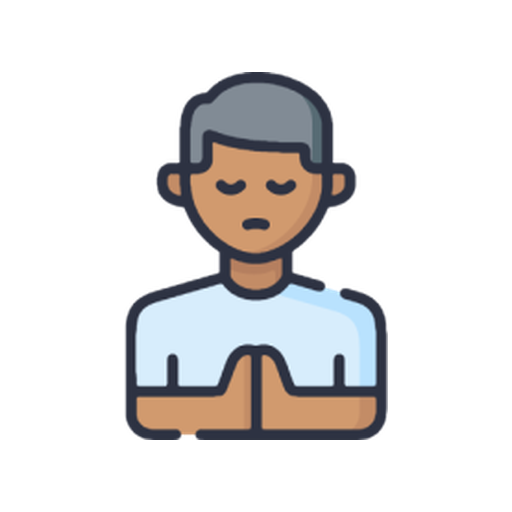

Preciso OrarUm espaço simples pra anotar por quem você está orando, acompanhar cada pedido e lembrar das respostas que já recebeu — tudo direto no seu celular.
Baixar na Google PlayGrátis · Android
Anote quem pediu, a descrição e, se quiser, uma data e o favorecido.
Guarde a resposta que você recebeu e revisite quando quiser.
Sem login, sem conta. Seus pedidos nunca saem do seu celular.